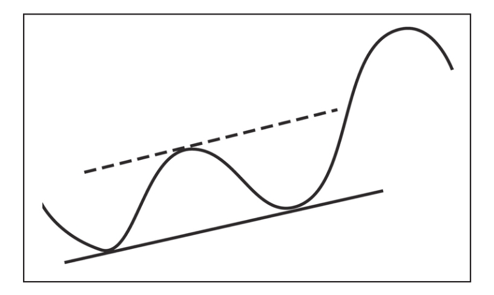
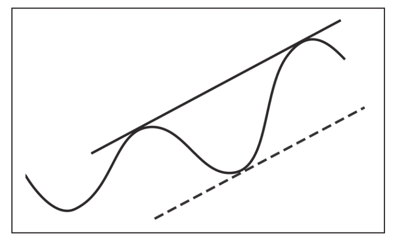
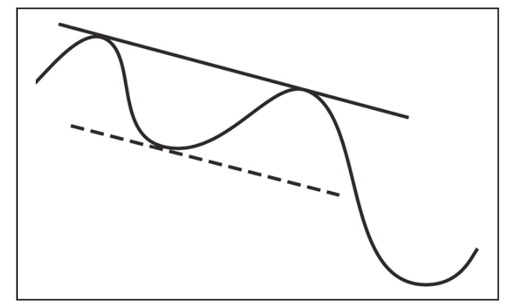
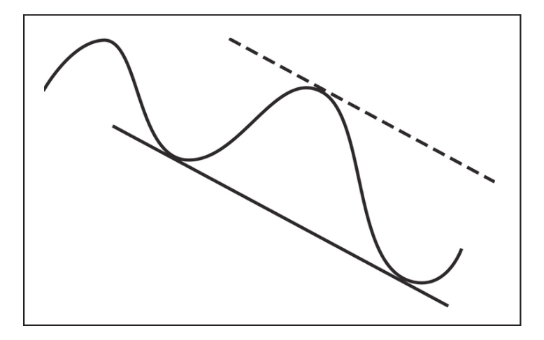
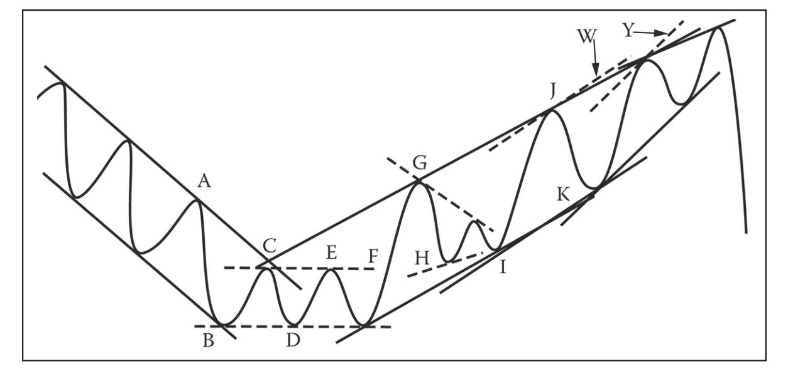
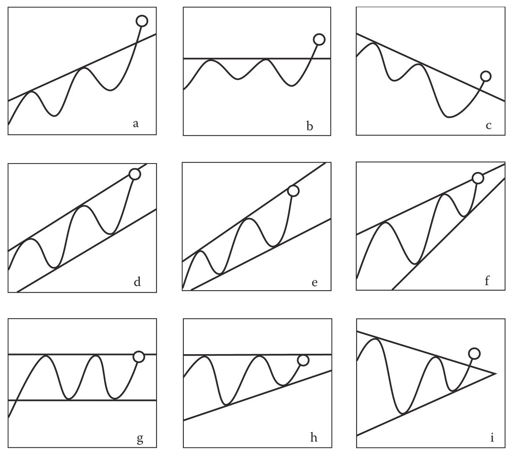
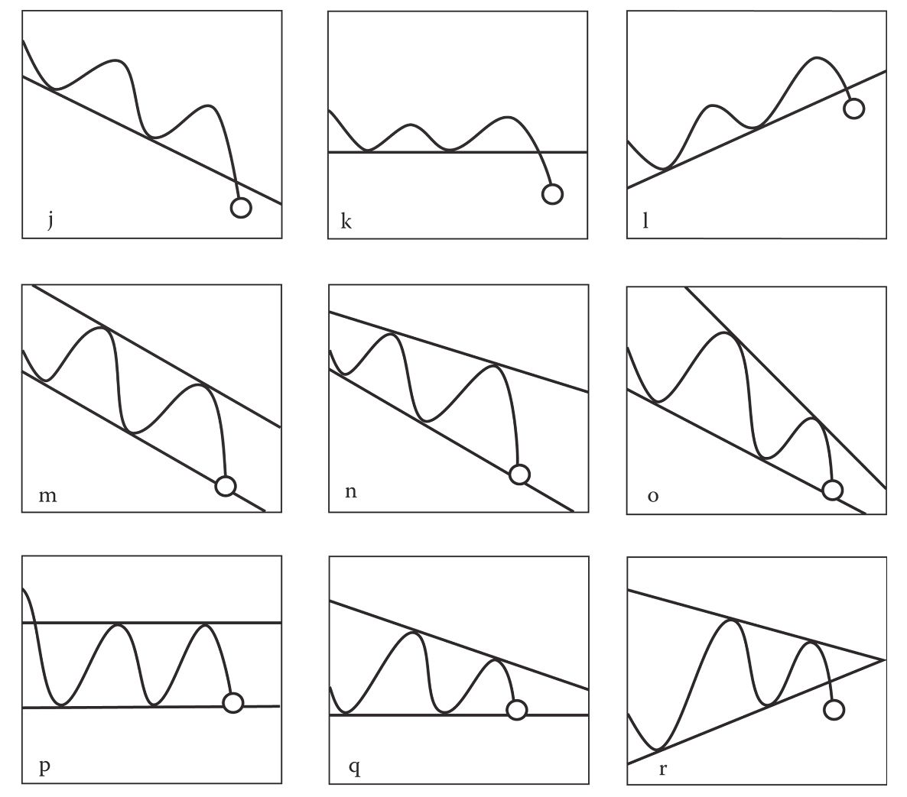

第29章 运行中的趋势线
通过本书第一部分的内容，我们已对股票单线趋势的特点、各种例外和偏离有所了解。我们也了解到股价通常会以平行趋势运行，有时会持续几个月甚至几年。同时，股价也可能突破趋势线或悄悄改变运行的方向。
大多数形态的形成都是趋势运行的体现，描绘了趋势的持续或反转。
一个对称三角形的出现意味着两种趋势的交汇。在三角形的形成过程中，股价遵循两大趋势，形态逐步收窄，最终主导趋势占据上风；上升三角形跟随上升趋势，但在顶部遭遇阻力；头肩形态则意味着上升趋势的终止和下降趋势的开始；箱形体现了平行趋势通道的运行，等等。
我们可以预测一个平行趋势，如果股价恰好延续这一趋势，则可在接近趋势线接触点的位置进行交易。可惜的是，此类完美的长直型趋势线十分罕见。在真实的交易中，我们会不断根据最新的可靠数据进行趋势预测。
从战术角度看，我们可以将趋势看作连续的短线顶部和短线底部。我们将通过简化的理想情形做进一步阐释。（参见图29-1～图29-6的示例。）
为了避免混淆，可以在日线图上用蓝色标记顶部趋势线，用红色标记底部趋势线。上面一条趋势线称作蓝色趋势线，下面一条趋势线称作红色趋势线。通常，我们会沿着蓝色趋势线的底部画一条平行于蓝色趋势线的直线，以使平行线之间包含两个顶部间的趋势通道。我们将此类平行线称为蓝色平行线，并用蓝色虚线标记。同样地，我们还可以画出红色趋势线的平行线，以使平行线之间包含两个底部之间的趋势通道，红色平行线用红色虚线标记。
底部（波谷）和顶部（波峰）通常交替出现，因此我们会交替画出蓝色趋势线和红色趋势线，当新的顶部或底部确立后，便可立即将这些线标记出来。（有时，可用浅色铅笔标出可能的顶部或底部，直到趋势得到确认。）
本书就短线顶部和底部的确认问题已有论述。这些点位通常比较明显，易于识别，对于那些难以识别的点位，唯有积累足够的经验、把握各种运行规律，方可确信地画出。反转中的短线趋势是最难确定的，特别是圆形或不规则形态的短线趋势，这种情况下，我们不可过于依赖趋势线来确定买卖的点位。

图29-1 该图显示了上升趋势中连接两个底部的基本趋势线，我们称其为红色趋势线，以及与波峰顶部相切的平行线（由虚线表示）。如果股价持续该趋势，则可通过平行线确定下一个近似的目标点位
只要股价沿平行趋势线通道持续运行，则可以确定应在接近通道底部处买入并在接近顶部处卖出。根据几何图形对情景的描述（参见图例），你会发现在上升趋势中卖空是不太可能盈利的（因为回调的幅度必然小于上涨的幅度），同样，在下降趋势中买入也难以获利。
因此，在确认买入机会前，先要对上升趋势有较大把握；在确认卖空机会前，先要对下降趋势有较大把握。
简化的图例表明，形态的构建意味着趋势的到来。上行过程中对箱体的突破会引起蓝色趋势线上倾。突破上升三角形的走势确认红色趋势线的上升，并构筑上行的蓝色趋势线；突破头肩形态颈线的下行确认蓝色趋势线的下降，并构筑下行的红色趋势线，等等。
通过对这些形态和不同趋势运行的研究，我们可以根据红色和蓝色趋势线总结出以下一系列交易规则。
29.1 买入、“做多”
·初步买入信号 （表明买入机会可能正在形成）。（在大多数情况下）蓝色趋势线的初步形成表明收盘价可能会创新高。（如果没有出现其他形态或迹象，仅仅突破下行蓝色趋势线不足以证明反转机会的到来。）
·如果蓝色和红色趋势线并不收敛（呈现平行或扩散通道），并且两条趋势线均呈上升态势，则在股价触及蓝色上升趋势线时买入。
·如果蓝色和红色趋势线均呈水平态势，或红色趋势线呈上升态势（箱形、上升三角形），则在股价触及蓝色水平趋势线时买入。
·如果红色趋势线呈上升态势且蓝色趋势线呈下降态势（对称三角形），则在股票放量突破蓝色下行趋势线时买入。
·买入的执行 （出现初步买入信号之后）。
·如果之前的蓝色趋势线已经上升，可画出蓝色平行线并在该线或接近该线处买入。

图29-2 折返线出现同样的上升趋势，连接两个顶部可以画出（我们称其为）蓝色趋势线。与干预性底部相切的虚线为蓝色趋势线的平行线。蓝色平行线可用于确认买入点位，特别是在趋势快速变化的情况下，此时股价可能不会按照基本趋势线做出反应
·如果之前的蓝色趋势线呈水平或下降态势（由箱形、三角形及各种反转形态而来），且股价在上次短线底部至最近一次极端顶部区间内回调40%～45%，则可择机买入。

图29-3 连接两个顶部的基本趋势线呈现下降态势，（我们称为）蓝色趋势线及与干预性下跌的底部相切的平行线（虚线）如图所示。平行线预示了趋势持续情况下可能的目标点位
29.2 清仓，或卖出多头仓位
在执行买入指令的同时，你应该设置保护性止损位（见第27章“止损指令”）。股价跌到该价位，就会自动触发平仓。你可以根据“三天法则”上移止损位，但切不可下移止损位（除非是因为除息或除权而做的调整）。如果股价收于前一个短线顶部之下（从而界定了一条下降红色趋势线），那么你应该在股价跌至（编者按：触发）紧密跟进性止损位时卖出持仓。

图29-4 本图展示了与折返线相同的下降趋势线，我们将这条连接了2个底部的折返线称为红色趋势线。图中虚线代表的是红色平行线，与两个底部之间的顶部相切。这条红色平行线有助于我们确定卖空时机，尤其是在一些不断变化的趋势中。在这种趋势中，股价可能不会反弹至基本趋势线
如果股价继续上涨，成交量平平，然后在蓝色趋势线被突破（收盘价高于趋势线）之前或在收盘价创新高（且高于上一个短线高点）之前，成交天量出现，那么我们就应该以紧密跟进性止损指令平仓。
如果该股是在以下两天出现成交放量：①股价见顶并收于蓝色趋势线之上；或②收盘价创新高且高于上一个短线顶部，那么就保持现有持仓不动。但如果第2天再次放量，那么就应该以紧密跟进性止损平仓。
你会发现，放量信号（有时还会伴随着单日反转或衰竭缺口）常常会出现在红色平行线上，或出现在该线附近。投资者应该加倍注意该信号，将其作为获利了结的时机。如果成交量信号未出现，那么红色平行线就是你的目标价位，可以通过限价指令或紧密跟进性止损指令来卖出股票。如果涨势见顶时并未出现成交量信号且股价并未触及蓝色趋势线或没有创新高，那么你很可能将会遇到一个三角形。这种情况下，你应该静静等待股价突破三角形。同时，设置保护性止损位。
29.3 卖空股票
·初步卖出信号（预示着卖空机会可能正在形成）。
·股价突破红色趋势线，到达一个新的收盘低位（在大多数情况下）。（若只是股价突破上升红色趋势线，而不伴以其他的形态或信号，则不足以确认趋势已经反转。）
·股价触及下降红色趋势线，而蓝色趋势线也呈下降之势，但前提是两条趋势线不呈收敛之势（即应为平行或发散的趋势通道）。
·股价触及水平红色趋势线，而蓝色趋势线也呈水平或下降之势（箱体、下降三角形）。
·股价击穿上升红色趋势线（无论成交量是否放大），而蓝色趋势线呈下降之势（对称三角形）。
·卖空的执行（在初步卖出信号出现以后）。
·若前期的红色趋势线呈下降之势，则画出红色平行线，然后在这条线的位置或附近卖出。

图29-5 本图是简化后的股价趋势图。基本趋势线用深色表示，折返线用浅色表示 [1] 。
一开始，股价在平行趋势线通道内下跌。蓝色趋势线是基本趋势线。我们可以在股价反弹至红色平行线上的A点时卖空，随后股价达到目标价位，即蓝色平行线上B点。在红色平行线的C点再次卖空，随后股价未能到达目标价位。但双底附近很可能会出现放量，并提醒我们离场。股价在E点向上突破了蓝色趋势线，但突破本身并不足以证明我们此时应该做多。对于箱体形态内出现的趋势线，我们采取和其他时候一样的标记方法，但在本图中以虚线表示，以强调形态。如果我们在箱体的F点再次卖空，那么该空头仓位将在股价突破箱体时止损。
现在，趋势开始转牛，但我们此时还无法画出基本（红色）趋势线。第一个买盘下在股价突破箱体后开始一段40%～50%的回调时，或股价回归顶部（支撑位）时，即H点。
我们可以穿过三角形内的第一个底部画一条趋势线。但本图并未显示该线，因为这条线最终会被穿过三角形最外沿那点的一条趋势线取代。我们以虚线展示了该形态之内的趋势线。
三角形被突破后的目标价位应该在红色平行线上，也就是我们现在的上升基本趋势线。股价在J点达到目标价位。此时，折返线（蓝色）可连接三角形内的第一个反转顶部（G）和突破后的高点（J）而画出，而穿过I点的平行线则会提醒我们下次买入的时机。实际上，股价并未回到该点；实际操盘中，我们可以根据40%～50%回调的原则，在K点买入，或在股价回调至支撑位（G点）时买入。
后续涨势并未达到红色平行线上的W点。但如果有交易放量、单日反转或缺口出现，那么这个警示信号会更清晰。因为趋势显然已经汇合，所以我们不应该再考虑买入。股价后续涨势减弱，远低于红色平行线所给出的目标价位Y点。很快，楔形被向下突破

图29-6
趋势运动显示的初步买入信号。
（a）上升蓝色趋势线被突破。
（b）水平蓝色趋势线被突破。
（c）下降蓝色趋势线被突破，但无其他技术指标出现。这并不能预示趋势会改变，也不应以此为依据做多。
（d）股价触及上升平行趋势线形态的蓝色趋势线。
（e）股价触及上升扩散趋势线形态的蓝色趋势线。
（f）这种情况下，股价虽然触及蓝色趋势线，但不应作为下次回调买入的信号，因为趋势看上去正在汇合，可能会出现楔形，预示着趋势转熊。
（g）股价在箱体的第5个反转点触及蓝色趋势线。
（h）股价触及上升三角形的蓝色趋势线。
（i）在红色趋势线上升时，股价放量突破下降的蓝色趋势线（对称三角形）。
在涨势中，蓝色趋势线就是折返线，我们可以在股价回调至新的蓝色趋势线（穿过信号出现后的顶部）的平行线（穿过处于顶部之间的底部）时，买入股票。请注意，当股价强势突破箱体或三角形时，我们可以在股价回调幅度达到突破走势的40%～50%时，或股价回调至支撑位时，买入股票

图29-6 （续）
趋势运动显示的初步买入信号。
（j）下降红色趋势线被突破。
（k）水平红色趋势线被突破。
（l）上升红色趋势线被突破，但无其他技术指标出现。这并不能预示趋势会改变，也不应该以此为依据做空。
（m）下降平行趋势线通道。
（n）股价触及下降扩散趋势线形态的红色趋势线。
（o）这种情况下，股价虽然触及蓝色趋势线，但不应作为下次反弹卖空的信号，因为趋势看上去正在汇合，可能会出现楔形，预示着趋势转牛。
（p）股价在箱体的第5个反转点触及红色趋势线。
（q）股价触及下降三角形的红色趋势线。
（r）在蓝色趋势线下降时，股价（可能伴随着放量，也可能没有）突破上升的红色趋势线（对称三角形）。
在跌势中，红色趋势线就是折返线，我们可以在股价反弹至新的红色趋势线（穿过信号出现后的底部）的平行线（穿过处于底部之间的顶部）时，进行卖空。请注意，当股价强势突破箱体或三角形时，我们可以在股价反弹幅度达到突破走势的40%～50%时，或股价反弹至阻力位时，进行卖空
·若前期的红色趋势线呈水平或上升之势（也就是说，从箱体、三角形、各类反转形态中脱离出来），则在股价升幅达到最近短线高点与短线低点之间距离的40%～45%时卖出。
29.4 空头回补
卖空之后，你要立即确定止损位，下达保护性止损指令（见第27章“止损指令”）。股价一旦击穿这个价位，你的仓位就自动平掉。该止损位可以按照“三天法则”向下调整，但绝不可以向上调整。
若股票收盘价位于前期的一个短线高点之上（从而形成一条上升蓝色趋势线），则在紧密渐进止损位买入以回补空头仓位。
若股票在成交温和的情况下下跌，接着在下跌过程中的任何一天反常放量，然后或突破红色趋势线（收于该趋势线以下），或在最近短线低点以下创出收盘新低，则在紧密渐进止损位平仓。
若股票在某一天放量，且跌破红色趋势线并收于这条线以下，或在前期短线低点以下创出收盘新低，则持有空头仓位不动。但是，若第2天或随后的某一天再次出现高成交量，则在紧密渐进止损位买入以回补空头仓位。
你会发现，在许多情况下，成交量放大的信号会出现在蓝色平行线上或附近（有时还伴随着单日反转或衰竭缺口）。你会密切关注这样的成交量信号，将其作为获利了结的良机。若此类成交量信号不出现，则你的买入目标就是蓝色平行线，按限价或在紧密跟进止损位回补。若股价跌到低点时不出现此类成交量信号，且股价没有到达红色趋势线或没有创出新低，则你很可能遇到一个三角形；此时，你必须耐心等待股价向上或向下突破，同时维持上方的保护性止损指令。
29.5 更多建议
若股价回调至一个短线低点或反弹至一个短线高点，然后小幅震荡达3周或更久，但不给出任何预示未来走势的价量信号，则你最好将这段震荡走势视为重要区域，将其视为短线顶部或底部，并以其为新的基准点，调整保护性止损位。这么做的原因是，股价一旦脱离了该区域，就可能循着不利于你的方向挺进。
股票逐波上涨或下跌（每次沿长线趋势方向前进时放量、每次回撤或调整时缩量）后，可能在沿长线趋势方向前进的过程中异常地放出巨量。此时，你在对前期的仓位进行获利了结后，通常会开始策划把握下一次调整。但在这种情况下，鉴于极端大的成交量，你最好观望一下，不要急于建仓。
这样做的原因是，此类巨量通常意味着中线趋势发生了最终的“冲顶回落”，股价随后要么反转（至少停滞一段时间），要么构筑整固形态，要么进入中线调整。此时，在长线趋势得到进一步确认前，根据该趋势建仓并非安全之举。
如果你研究不同股票涵盖长期、重要趋势的日线图，你会发现构成中线趋势的一系列短线走势可能终结于一波成交量巨大的短线行情。这种情况更多见于顶部而非底部，但在熊市的恐慌阶段末尾，成交量往往异常巨大。顶部的巨大成交量表明卖盘强于买盘，而底部的巨大成交量表明买盘强于卖盘。
人们最常犯的一个错误是，将天量顶部或底部当作对前期趋势的正常确认，并相应地循着前期的趋势方向建仓。
从本质上看，这个错误类似于市场新手常犯的一个错误，那就是在短线高点买入（由于受到了股价飙涨、成交活跃的鼓动）。然而，在这些最终“冲顶回落”的走势中，成交量非常大，负面的预兆非常强。
29.6 长线趋势交易策略概述
A.永远循着道指当时表现出来的长线趋势方向交易（编者按：请见本书编辑在第3章中的评论）。
B.如果组成道氏理论的两个平均指数（工业及铁路；第9版编者按：运输业）走势不一致，那么就循着最近确立的长线趋势方向交易，但只交易依然遵循该趋势的指数。
C.研究同类或相关企业板块平均指数的图表；当板块的趋势明朗时，循着长线趋势方向交易。
D.对走势符合板块长线趋势的个股进行交易，具体时机为技术图表预示着个股可能循长线趋势方向前进时。
长线趋势方向的信号出现后，在回调或反弹过程中建仓，除非长线趋势由牛转熊，此时可在趋势反转之后立即卖空。
例外：股市循着长线趋势的方向运行较长一段时间后，会在技术图表上呈现出衰竭、反转的迹象，可能展开中线调整，此时可循着长线趋势的反方向建仓。
（第9版编者按：现在读者想必已经晕头转向，色盲者肯定一头雾水。因为本书是黑白印刷的，所以没有彩色铅笔的读者肯定很难把握。所以我建议：拿出你的彩色铅笔，亲手画那些线条。迈吉在此处介绍的原理对于交易者很有价值，值得学习。）
[1] 原书如此，疑有误。—编者注